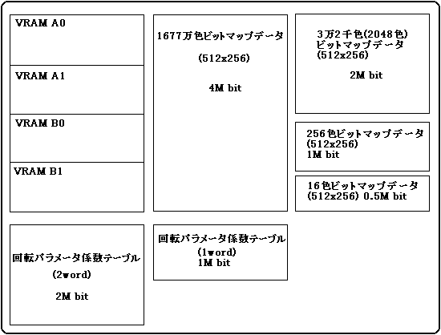

★PROGRAMMER'S GUIDE
★VDP2ライブラリ
★PROGRAMMER'S GUIDE
★VDP2ライブラリ
図1 VRAMとデータの大きさの比較

┏━━━━━━━━━━━━━┓ ┌────────────────┐RBG0 ┃ＶＲＡＭ Ａ０ ┃ │２５６色ビットマップデータ │ ┃ ┃ │（５１２×２５６） │ ┃ ┃ │１Ｍ ｂｉｔ │ ┃ ┃ │ │ ┃ ┃ │ │ ┣━━━━━━━━━━━━━┫ ┝━━━━━━━━━━━━━━━━┥ ┃ＶＲＡＭ Ａ１ ┃ │回転パラメータ係数テーブル │ ┃ ┃ │（１ｗｏｒｄ） │ ┃ ┃ │ │ ┃ ┃ ├────────────────┤ ┃ ┃ │回転パラメータテーブル │ ┣━━━━━━━━━━━━━┫ ┝━━━━━━━━━━━━━━━━┥NBG0 ┃ＶＲＡＭ Ｂ０ ┃ │１６色ビットマップデータ │ ┃ ┃ │（５１２×２５６）０．５Ｍｂｉｔ│ ┃ ┃ ├────────────────┤NBG2 ┃ ┃ │キャラクターパターンデータ │ ┃ ┃ │パターンネームデータ │ ┣━━━━━━━━━━━━━┫ ┝━━━━━━━━━━━━━━━━┥NBG1 ┃ＶＲＡＭ Ｂ１ ┃ │１６色ビットマップデータ │ ┃ ┃ │（５１２×２５６）０．５Ｍｂｉｔ│ ┃ ┃ ├────────────────┤NBG3 ┃ ┃ │キャラクターパターンデータ │ ┃ ┃ │パターンネームデータ │ ┗━━━━━━━━━━━━━┛ └────────────────┘
┏━━━━━━━━━━━━━┓ ┌────────────────┐RBG0 ┃ＶＲＡＭ Ａ０ ┃ │２５６色ビットマップデータ │ ┃ ┃ │（５１２×２５６） │ ┃ ┃ │１Ｍ ｂｉｔ │ ┃ ┃ │ │ ┃ ┃ │ │ ┣━━━━━━━━━━━━━┫ ┝━━━━━━━━━━━━━━━━┥ ┃ＶＲＡＭ Ａ１ ┃ │回転パラメータ係数テーブル │ ┃ ┃ │（１ｗｏｒｄ） │ ┃ ┃ │ │ ┃ ┃ ├────────────────┤ ┃ ┃ │回転パラメータテーブル │ ┣━━━━━━━━━━━━━┫ ┝━━━━━━━━━━━━━━━━┥RBG1 ┃ＶＲＡＭ Ｂ０ ┃ │キャラクターパターンデータ │ ┃ ┃ │１Ｍｂｉｔ │ ┃ ┃ │ │ ┃ ┃ │ │ ┃ ┃ │ │ ┣━━━━━━━━━━━━━┫ ┝━━━━━━━━━━━━━━━━┥ ┃ＶＲＡＭ Ｂ１ ┃ │パターンネームデータ │ ┃ ┃ │１Ｍｂｉｔ │ ┃ ┃ │ │ ┃ ┃ │ │ ┃ ┃ │ │ ┗━━━━━━━━━━━━━┛ └────────────────┘
項 目 | NBG0 〜 NBG3 | RBG0 , RBG1 | ||
|---|---|---|---|---|
縮小設定 | 1倍 | 1/2倍 | 1/4倍 | − |
1サイクルに必要なVRAMアクセス回数 | 1 | 2 | 4 | 8 |
項 目 | NBG0 〜 NBG3 | RBG0 , RBG1 | |||||||||
|---|---|---|---|---|---|---|---|---|---|---|---|
TV画面モード | ノーマル | ハイレゾ | 専用 | ||||||||
キャラクタ色数 | 16 | 256 | 2048 | 32768 | 1677万 | − | − | − | |||
縮小設定（倍） | 1 | 1/2 | 1/4 | 1 | 1/2 | 1 | 1 | 1 | − | − | − |
1サイクルに必要なVRAMアクセス回数 | 1 | 2 | 4 | 2 | 4 | 4 | 4 | 8 | 8 | 4 | 4 |
┏━━━━━━━━━━━━━┓ ┌────────────────┐NBG0 1倍 ┃ＶＲＡＭ Ａ ┃ │１６色ビットマップデータ │ ┃ ┃ │ │ ┃ ┃ ├────────────────┤NBG1 1倍 ┃ ┃ │１６色ビットマップデータ │ ┃ ┃ │ │ ┃ ┃ ├────────────────┤NBG2 1倍 ┃ ┃ │キャラクターパターンデータ │ ┃ ┃ │パターンネームデータ │ ┃ ┃ ├────────────────┤NBG3 1倍 ┃ ┃ │キャラクターパターンデータ │ ┃ ┃ │パターンネームデータ │ ┣━━━━━━━━━━━━━┫ ┝━━━━━━━━━━━━━━━━┥NBG0 1/4倍 ┃ＶＲＡＭ Ｂ０ ┃ │１６色ビットマップデータ │ ┃ ┃ │ │ ┃ ┃ ├────────────────┤NBG1 1/4倍 ┃ ┃ │１６色ビットマップデータ │ ┃ ┃ │ │ ┣━━━━━━━━━━━━━┫ ┝━━━━━━━━━━━━━━━━┥NBG2 1倍 ┃ＶＲＡＭ Ｂ１ ┃ │キャラクターパターンデータ │ ┃ ┃ │パターンネームデータ │ ┃ ┃ ├────────────────┤NBG3 1倍 ┃ ┃ │キャラクターパターンデータ │ ┃ ┃ │パターンネームデータ │ ┗━━━━━━━━━━━━━┛ └────────────────┘
#include <machine.h>
#include "sega_scl.h"
/* サイクルパターンテーブルの設定 */
Uint16 n0_cycle[]={0x44ff, 0x0fff, /* VRAM A(A0)NBG0のキャラクタパターン
とパターンネームテーブル有 */
0xffff, 0xffff, /* VRAM A1 VRAM Aは分割していないので */
/* 未使用 */
0xffff, 0xffff, /* VRAM B(B0) データなし */
0xffff, 0xffff}; /* VRAM B1 VRAM Bは分割していないので */
/* 未使用 */
extern Uint16 ColData[]; /* パレットのデータのポインタ */
SclConfig scfg;
main()
{
SCL_Vdp2Init(); /* VDP2ライブラリの初期化 */
SCL_SetDisplayMode(SCL_NON_INTER,SCL_224LINE,SCL_NOMAL_A);
/* 画面モードの設定 */
SCL_SetColRamMode(SCL_CRM_2048);
/* カラーRAMモードの設定 */
SCL_AllocColRam(SCL_NBG0,256,ON);
/* パレット領域確保 */
SCL_SetColRam(SCL_NBG0,0,265,ColData);
/* パレットデータの設定 */
.................. /* スクロールデータをVDP2のVRAMに格納します。 */
SCL_InitConfigTb(&scfg); /* スクロールNBG0コンフィグレーション初期化 */
scfg.dispenbl = ON; /* NBG0を画面表示する */
scfg.charsize = SCL_CHAR_SIZE_1X1;
scfg.pnamesize = SCL_PN1WORD;
scfg.platesize = SCL_PL_SIZE_1X1;
scfg.coltype = SCL_COL_TYPE_256;
scfg.flip = SCL_PN_12BIT;
scfg.datatype = SCL_CELL;
scfg.plate_addr[0] = SCL_VDP2_VRAM_A+0x0000;
scfg.plate_addr[1] = SCL_VDP2_VRAM_A+0x2000;
scfg.plate_addr[2] = SCL_VDP2_VRAM_A+0x4000;
scfg.plate_addr[3] = SCL_VDP2_VRAM_A+0x6000;
SCL_SetConfig(SCL_NBG0, &scfg);
SCL_SetPriority(SCL_NBG0,7); /* プライオリティを最大に設定 */
SCL_SetCycleTable(n0_cycle); /* サイクルパターンの設定 */
INT_SetScuFunc(.....); /* V-Blankルーチンの登録 */
set_imask(0); /* 割り込みを有効にする。 */
SCL_Open(SCL_NBG0); /* NBG0オープン処理 */
SCL_Move(FIXED(1), FIXED(1), 0); /* 各種スクロール動作関数 */
.
.
.
SCL_Close(SCL_NBG0); /* スクロール処理終了 */
SCL_DisplayFrame(); /* V_BLANKを待ちスクロール表示を行 */
}
★PROGRAMMER'S GUIDE
★VDP2ライブラリ